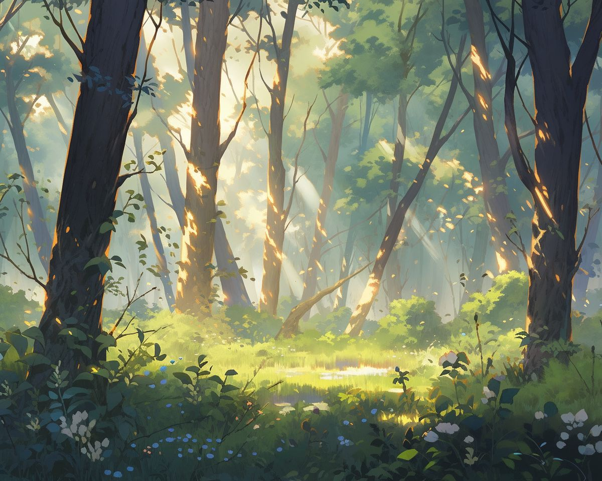
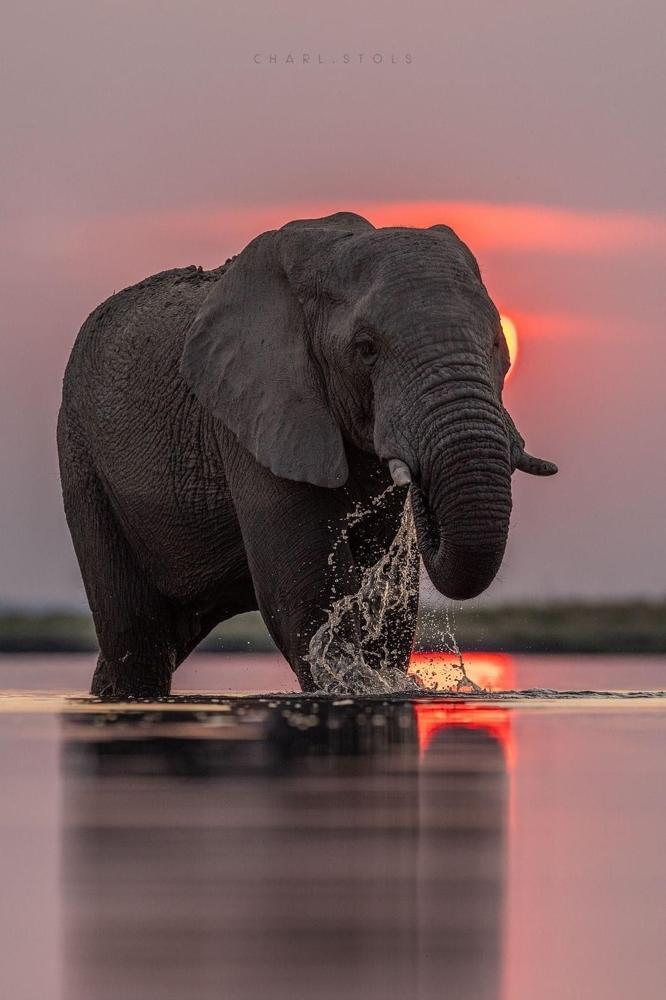
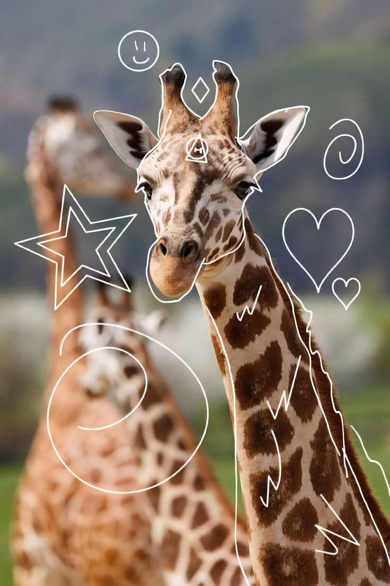

Descubre los animales que viven sobre la tierra y los diferentes ecosistemas donde habitan.

El elefante es uno de los animales terrestres más grandes del planeta y destaca por su inteligencia.

La jirafa es el animal más alto del mundo. Su largo cuello le permite alimentarse de los árboles.
El panda gigante vive principalmente en China y se alimenta de bambú.